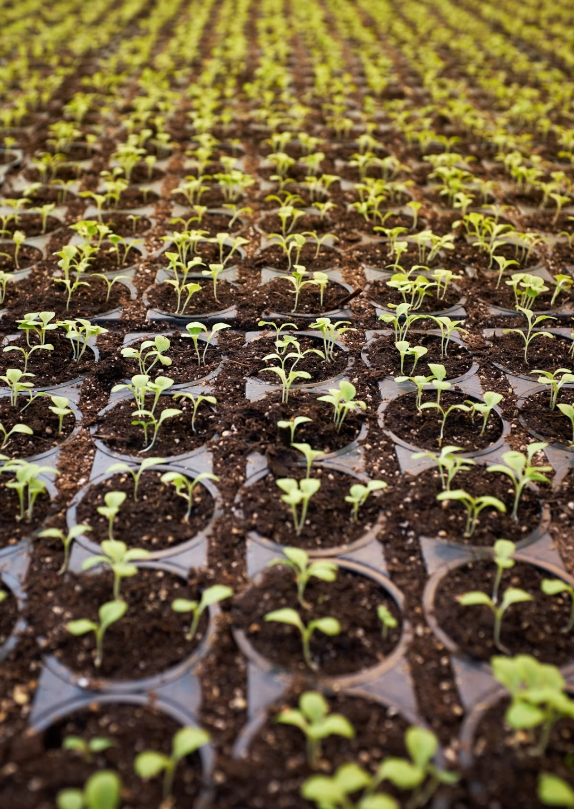

Prendre soin de ses plantes d'intérieur est essentiel pour les garder en bonne santé et prolonger leur durée de vie. Un bon entretien permet d'éviter les maladies et de favoriser une belle croissance.
Voici quelques conseils pour entretenir vos plantes :
- Arrosage modéré : Trop d'eau peut provoquer le pourrissement des racines. Il est préférable d'arroser en fonction des besoins spécifiques de chaque plante.
- Exposition à la lumière : Placez vos plantes dans un endroit bien éclairé, mais évitez l’exposition directe aux rayons du soleil pour ne pas brûler les feuilles.
- Engrais naturel : Nourrissez vos plantes avec des engrais adaptés pour leur apporter les nutriments nécessaires.
- Taille régulière : Retirez les feuilles mortes ou jaunies pour stimuler la croissance et améliorer l’apparence de la plante.
- Humidité ambiante : Certaines plantes apprécient un taux d’humidité élevé. Pensez à vaporiser un peu d’eau sur les feuilles ou à placer un humidificateur à proximité.
En suivant ces recommandations, vos plantes resteront en pleine forme et apporteront une touche de verdure agréable à votre intérieur. Pour plus de conseils, consultez notre boutique et découvrez nos accessoires pour le jardinage !
Vos Commentaires
Rita Eloyse : Très belle décoration, j'adore !
Marc Emerik : Le service est top, merci !
Laissez votre avis